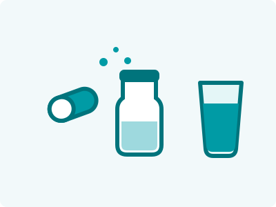

El formato no es un detalle estético: define tu costo, tu lote mínimo, tu logística y hasta quién te compra. Antes de enamorarte de un frasco bonito, revisa qué formato le conviene a tu activo, tu cliente y tu canal de venta.
Format isn't a cosmetic detail: it defines your cost, your minimum order, your logistics and even who buys from you. Before falling in love with a pretty bottle, check which format suits your active, your customer and your sales channel.
Cápsulas y tabletas: la dosis exacta
Capsules and tablets: the exact dose
Elígelas cuando la precisión de dosis importa (vitaminas, minerales, extractos concentrados), el activo tiene mal sabor, o tu cliente valora la practicidad de "una al día".
Choose them when dose precision matters (vitamins, minerals, concentrated extracts), the active tastes bad, or your customer values "one a day" convenience.
- Ventajas: dosis exacta, larga vida de anaquel, transporte fácil, enmascara sabores.
- Pros: exact dosing, long shelf life, easy shipping, masks flavors.
- Limitaciones: dosis grandes requieren varias piezas por toma; hay consumidores que no toleran tragar cápsulas.
- Limits: large doses require several units per serving; some consumers can't swallow capsules.
- Ideal para: multivitamínicos, minerales, extractos herbales, fórmulas de precisión.
- Best for: multivitamins, minerals, herbal extracts, precision formulas.
Polvos: gramos generosos y experiencia de sabor
Powders: generous grams and a flavor experience
Elígelos cuando la dosis eficaz se mide en gramos, no en miligramos: proteínas, colágeno, creatina, greens. Ninguna cápsula puede entregar 10 g de colágeno; un scoop sí.
Choose them when the effective dose is measured in grams, not milligrams: proteins, collagen, creatine, greens. No capsule can deliver 10 g of collagen; a scoop can.
- Ventajas: dosis altas, costo por gramo competitivo, el sabor se vuelve parte de la marca, mínimos de entrada accesibles.
- Pros: high doses, competitive cost per gram, flavor becomes part of the brand, accessible entry minimums.
- Limitaciones: requiere preparación (agua, shaker), y el desarrollo de sabor es crítico — un mal sabor mata la recompra.
- Limits: requires preparation (water, shaker), and flavor development is critical — bad taste kills repeat purchase.
- Ideal para: proteínas, colágenos, pre-entrenos, greens, fibras.
- Best for: proteins, collagens, pre-workouts, greens, fibers.
Líquidos: la experiencia premium
Liquids: the premium experience
Elígelos cuando quieres diferenciarte con conveniencia total (shots listos para tomar), tu público evita cápsulas (niños, adultos mayores), o el posicionamiento es premium.
Choose them when you want to differentiate with total convenience (ready-to-drink shots), your audience avoids capsules (kids, seniors), or the positioning is premium.
- Ventajas: cero fricción de consumo, percepción de absorción rápida, precio premium por unidad.
- Pros: zero consumption friction, fast-absorption perception, premium unit pricing.
- Limitaciones: mínimos más altos, logística más pesada (peso y volumen), y exige un maquilador con control microbiológico serio.
- Limits: higher minimums, heavier logistics (weight and volume), and demands a manufacturer with serious microbiological control.
- Ideal para: vitaminas infantiles, colágeno bebible, shots energéticos y de bienestar.
- Best for: kids' vitamins, drinkable collagen, energy and wellness shots.
La decisión en 3 preguntas
The decision in 3 questions
- ¿Cuántos gramos necesita la dosis eficaz? Miligramos → cápsula. Gramos → polvo o líquido.
- How many grams does the effective dose need? Milligrams → capsule. Grams → powder or liquid.
- ¿Dónde vas a vender? E-commerce favorece polvos y cápsulas (ligeros); punto de venta físico y conveniencia favorecen líquidos.
- Where will you sell? E-commerce favors powders and capsules (lightweight); physical retail and convenience favor liquids.
- ¿Cuál es tu presupuesto de primer lote? Los mínimos suben de polvo → cápsula → líquido.
- What's your first-batch budget? Minimums rise from powder → capsule → liquid.
¿No estás segura del formato? Es literalmente la primera pregunta que resolvemos en una llamada de 20 minutos. Cuéntanos tu producto y te recomendamos el formato con números sobre la mesa.
Not sure about the format? It's literally the first question we solve in a 20-minute call. Tell us about your product and we'll recommend the format with real numbers on the table.